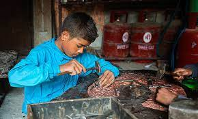
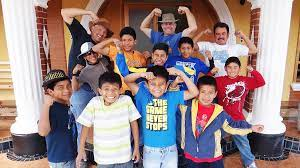

- Child abuse is one of the most henious crime yet every year thousand of cases go unreported. We plan to speak up and encourage others to do so. The five day progarm agianst child sbuse has been going on. It is currently the third day and our organisation is very satisfied with the imapct the program has had.As late as the 19th century, cruelty to children, perpetrated by employers and teachers, was commonplace and widespread, and corporal punishment was customary in many countries. But, in the first half of the 19th century, pathologists studying filicide (the parental killing of children) reported cases of death from paternal rage, recurrent physical maltreatment,starvation, and sexual abuse.Child abuse is complex and difficult to study. According to the World Health Organization (WHO), estimates of the rates of child maltreatment vary widely by country, depending on how child maltreatment is defined, the type of maltreatment studied, the scope and quality of data gathered, and the scope and quality of surveys that ask for self-reports from victims, parents, and caregivers. Despite these limitations, international studies show that a quarter of all adults report experiencing physical abuse as children, and that 1 in 5 women and 1 in 13 men report experiencing childhood sexual abuse. Emotional abuse and neglect are also common childhood experiences.
-
We all have heard about people sponsoring children and may have had several questsions in mind about what it is? You can get all the info you need at our SPONSORSHIP AWARENESS CAMPAIGN.
Everyone is invited to the event.
HELP US find our little kids the financial help that they need. Child sponsorship is a type of fundraising in which a charitable organization associates a donor sponsor with a particular child beneficiary. The sponsor receives updates from the child, typically including photos and translated letters, which help create the feeling of a personal relationship with the child. The donated funds are often not spent specifically on the sponsored child, but pooled with other contributions to fund a variety of education, health, security, infrastructure, or other projects in the child's community or country. One estimate is that over 9 million children are given over US $5 billion by child sponsorship programs. Other sources state the amount of child sponsorship funding is closer to US $3 billion per year. -
-
- Those children with no home and parents, have you ever thought about standing in their shoes? Once you do, you will be filled with the need to help them anyhow. At our STREET KIDS welfare program, we need your help and contribution to make thier lives a little hopeful. Let them experience love and care. Let them have the experience to a REAL CHILDHOOD. As many street children as there are in the world there are as many reasons for them being there. Every single child has their own unique story. The reasons for their connection to the streets will vary from country to country, city to city, and from person to person. These factors will also vary over time, such as poverty, displacement due to natural disasters and conflicts or family breakdown all lead to increases in the numbers of street children in a given area. Economic poverty plays a major role, although other factors are of equally high importance. These can include: parental deaths, parental neglect and other social factors such as violence and abuse of children at home or within communities.
- In the coming days, we are hosting and event for child walfare. This is a call for all the volunteers. We are hoping that the youths of Nepal are willing to answer the call. United let us take a step towards helping the future generation who are without any support. Your hardwork will have a huge change, let us walk towards it. Modern societies share a common value of people helping each other; not only do volunteer acts assist others, but they also benefit the volunteering individual on a personal level. Despite having similar objectives, tension can arise between volunteers and state-provided services. In order to curtail this tension, most countries develop policies and enact legislation to clarify the roles and relationships among governmental stakeholders and their voluntary counterparts; this regulation identifies and allocates the necessary legal, social, administrative, and financial support of each party. This is particularly necessary when some voluntary activities are seen as a challenge to the authority of the state (e.g., on 29 January 2001, President Bush cautioned that volunteer groups should supplement not replace government agencies' work). Volunteering that benefits the state but challenges paid counterparts angers labor unions that represent those who are paid for their volunteer work; this is particularly seen in combination departments, such as volunteer fire departments.
- 
- 
- As the organistion has madde tremendous progress and our rescue has crossed 10,000, we are celebrating that too on CHILDREN's DAY. On the 5th of March, 2023 we are hosting an event for our rescue kids. The kids have prepared performances for your entertainment. They are happy to celebrate this day with you. WE INVITE YOU ALL.Lets celebrate happines together. In Nepal, Children's Day is celebrated on Bhadra 29 according to the Nepali Calendar after signing the child rights agreement with the UN. Earlier during the Shah Rule, Nepal used to observe Children's Day on Bhadra 4 on the birthday of H.M. Queen Mother Ratna Rajya Laxmi Devi Shah. It is celebrated by conducting various programs in various institutions around Nepal. It was established as a holiday in 1990. After the establishment of the federalism government, Child right is under the Ministry of Women, Children, and Senior Citizens. On the occasion of the 58th National Children's Day Bhadra 29th 2079 Nepali Calendar with the theme of " The Foundation of Child-Friendly Society: Responsible Family, Responsible Government" celebrates Children's Day in the different areas of Nepal
- Thos who are privledged are unaware of hunger. Sadly, these kids are not. It is unfortunate that at this age they wondering for food. We provode food to many childrean along with shelter but there are kids who have shelter but no food and visa versa. We are collabrating with varoius other oragniastion to feed the hungary.. To make this dream possible we need your support. Please contibute in this noble event. With thousands of food banks operating around the world, there are many different models.A major distinction between food banks is whether or not they operate on the "front line" model, giving out food directly to the hungry, or whether they operate with the "warehouse" model, supplying food to intermediaries like food pantries, soup kitchens and other front-line organizations. In the US, Australia and to an extent in Canada, the standard model is for food banks to act as warehouses rather than as suppliers to the end user, though there are exceptions. In other countries, food banks usually hand out food parcels direct to hungry people, providing the service that in the US is offered by food pantries.